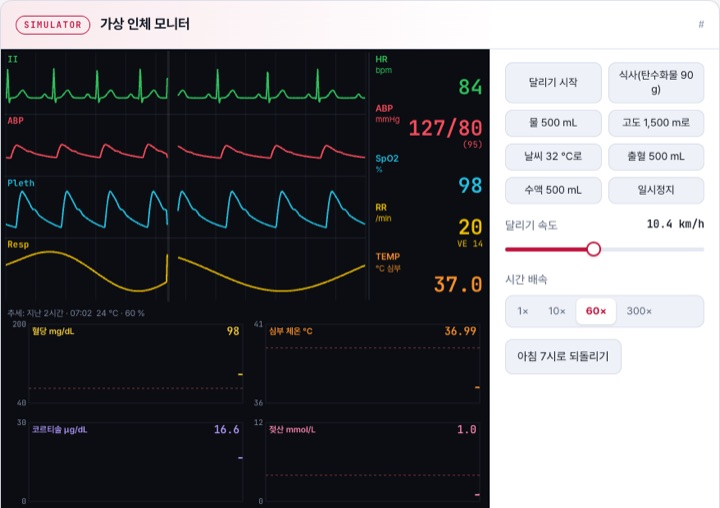
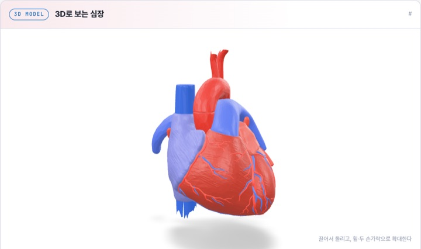
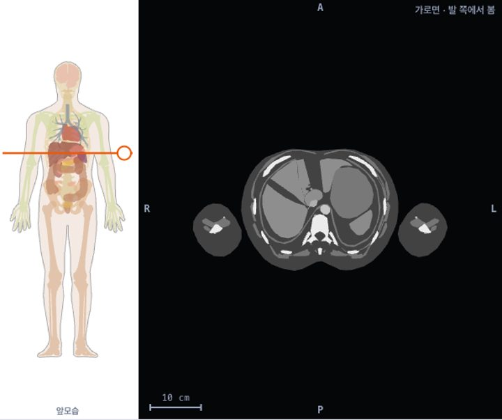
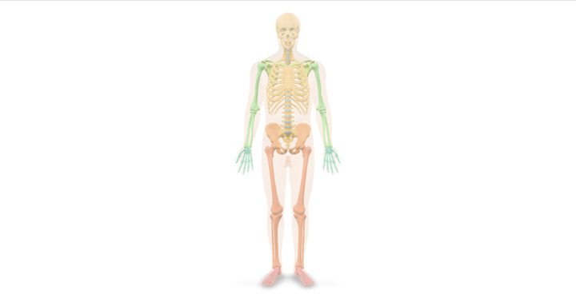
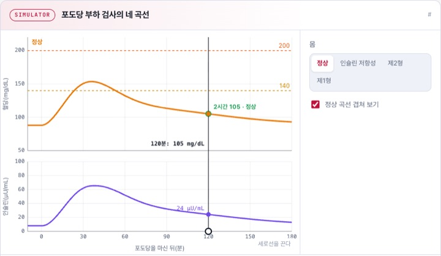
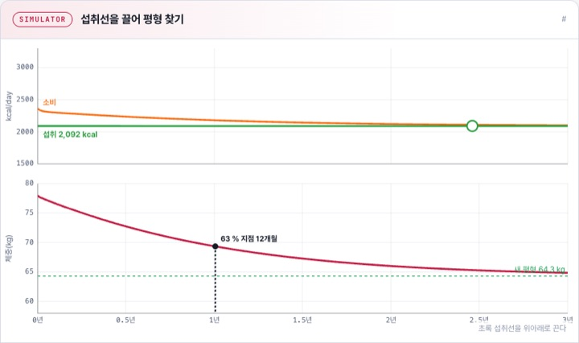
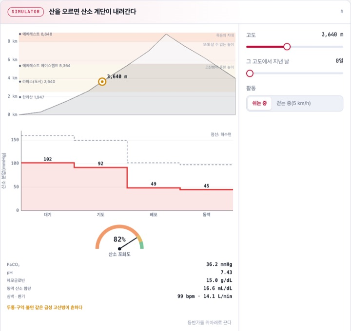
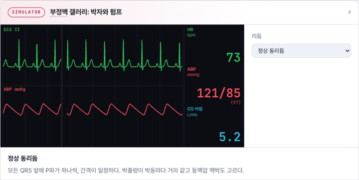

몸의 구조를 처음 본다면
해부학의 방향과 단면을 익히고, 뼈대와 가슴·배 안의 장기가 놓인 자리를 실제 인체 데이터로 봅니다.
3D 심장을 돌려 네 방을 찾고, 가상 인체 모니터에 달리기와 식사를 걸어 보고, 포도당 부하 검사의 곡선과 체중이 멈추는 평형을 직접 끌어 봅니다. 실제 인체 3D 데이터로 뼈와 장기의 자리를 찾고 CT처럼 잘라 봅니다. 몸의 원리 BodyBook과 몸의 구조 AnatomyBook이 꽂힌 서가입니다.
1권 공개심장 · 폐 · 혈당 · 호르몬 · 운동
조건에 맞는 책이 없습니다. 다른 검색어나 분야를 선택해 보세요.
질문 하나를 골라 시뮬레이터를 움직여 보세요. 각 실험은 해당 교과서의 그 장면으로 바로 이어집니다.

BodyBook · 몸달리기·식사·출혈이 닥치면 몸의 숫자는 어떻게 버틸까?아침 7시부터 돌아가는 가상 환자 모니터에 달리기·식사·고도·출혈 같은 사건을 걸어 봅니다.직접 바꿔 보기 →
BodyBook · 몸심장의 네 방은 실제로 어떻게 겹쳐 있을까?해부 데이터로 만든 3D 심장을 돌리고, 벽을 반투명하게 해 판막과 유두근을 찾습니다.직접 돌려 보기 →
AnatomyBook · 구조배를 CT처럼 잘라 보면 무엇이 보일까?실제 인체 3D 데이터를 가로·관상·시상면으로 잘라 높이마다 바뀌는 장기와 뼈를 누르며 찾습니다.직접 잘라 보기 →
AnatomyBook · 구조206개의 뼈는 몸통과 팔다리에 어떻게 나뉠까?실제 인체 데이터로 만든 3D 뼈대를 돌리며 부위별로 켜고 끄고, 몸통뼈대와 팔다리뼈대를 나눠 봅니다.직접 돌려 보기 →
BodyBook · 몸같은 포도당 75 g인데 혈당 곡선은 왜 다를까?정상·인슐린 저항성·제2형·제1형 몸에 포도당 부하 검사를 하고 혈당과 인슐린 곡선을 비교합니다.직접 바꿔 보기 →
BodyBook · 몸덜 먹는데 체중은 왜 어느 순간 멈출까?섭취선을 끌어 줄어든 몸의 소비가 섭취와 만나는 새 평형과, 거기까지 걸리는 시간을 봅니다.직접 바꿔 보기 →
BodyBook · 몸높은 산에 오르면 산소는 어디에서 줄어들까?등반가를 끌어 고도를 바꾸며 대기에서 동맥까지 산소 분압의 계단과 포화도가 내려가는 모습을 봅니다.직접 바꿔 보기 →
BodyBook · 몸박자가 어긋나면 심장은 피를 얼마나 내보낼까?심방세동·방실 차단·심실세동 같은 리듬을 골라 심전도와 함께 동맥압과 심박출량이 바뀌는 모습을 봅니다.직접 바꿔 보기 →처음이라면 몸 전체의 지도와 항상성부터 보고, 궁금한 계통이 생기면 해당 장으로 넘어가세요.
해부학의 방향과 단면을 익히고, 뼈대와 가슴·배 안의 장기가 놓인 자리를 실제 인체 데이터로 봅니다.
몸 전체의 지도를 펴고, 모든 계통에 깔린 피드백 원리와 세포의 막부터 잡습니다.
한 박동의 펌프에서 심전도의 전기, 심박수와 혈류까지 이어 봅니다.
폐의 역학에서 산소가 피에 실리는 과정, 호흡을 조절하는 신호까지 따라갑니다.
혈압과 혈당, 콩팥 수치가 몸의 어떤 작동을 가리키는지 봅니다.
에너지 대사를 계산하고, 운동하는 몸과 체중이 변하는 원리를 숫자로 봅니다.
호르몬과 체온 조절을 거쳐 인체 실험실에서 여러 계통을 한꺼번에 움직여 봅니다.